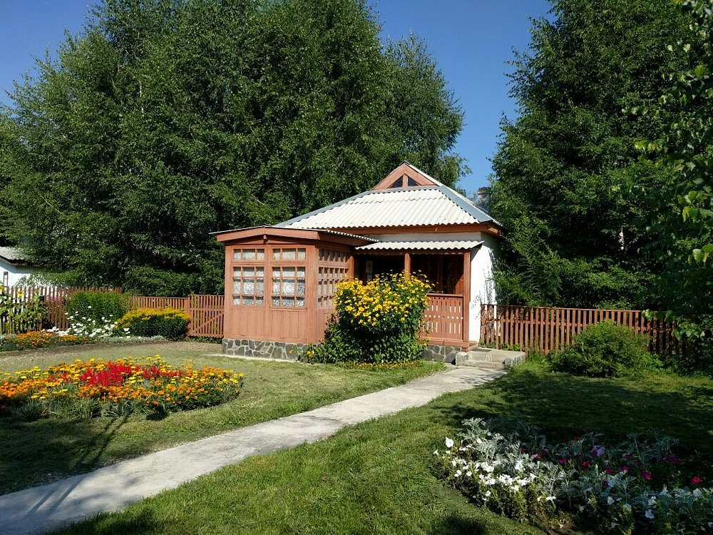
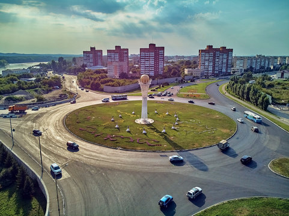
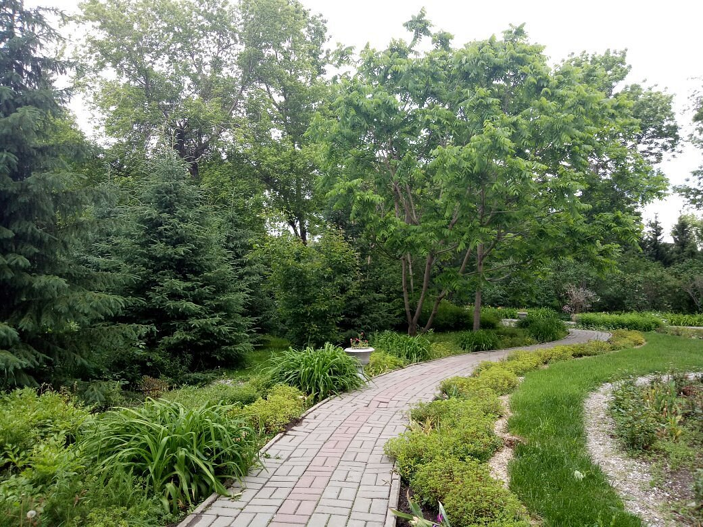

Ethnic village is the open-air museum with monuments of wooden, stone architecture of ethnic groups libing in the territory of East Kazakhstan, as well as archeological items. The park was built on the left side of the Irtysh River. Ethnic-village holds an airplane and helicopter released from Soviets, a bunch of the statys of Soviet heroes, and a collection of Lenin monuments, which are placed around line of WW2 tanks along with the other big number of guns, rockets, and radar equipment. There are also an impressive collection of traditional houses from different regions of the Soviet Union like Kazakh yurt, a Ukrainian yurt, a Russian hut, Korean, German, Armenian and European courtyards. In general, the park is well maintained and its the top place to go if you are in Oskemen.
The city of Oskemen is the first after Astana, where another Baiterek appeared. The city administration calls it the "younger brother" of the famous capital Baiterek in Nur-Sultan. The monument is one of the main attractions of the city. It was a gift by local enterpreneurs to the towns for the celebration of the 290th anniversary of Oskemen. The total height of the monument is 28.5 m, and its weight is 22 tons.
The pretty, excellently preserved central park offers for a pleasant walk. Park Zhastar, former Park Kirova is located in the center of Oskemen where are numerous oldest buildings and some museums have surrounded the park. The park contains several golden statues, illustrating themes from the fairy tales and the monument of the Kirov
You can find other sightseeings of Oskemen here: Sightseeings